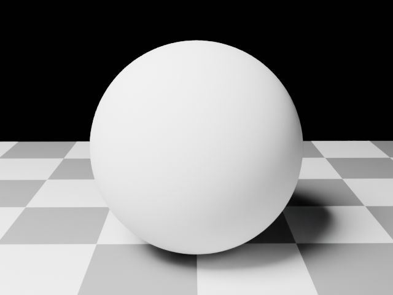
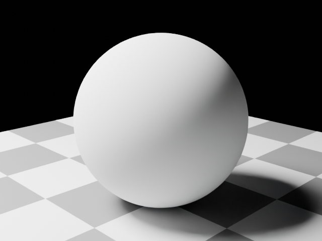
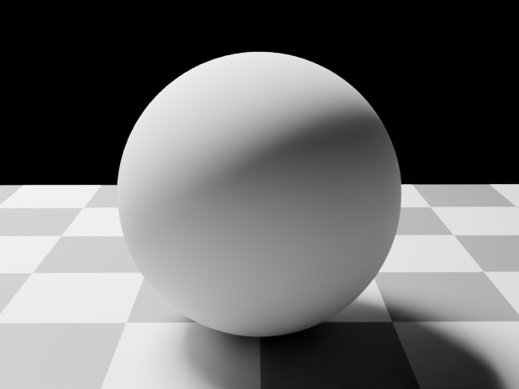
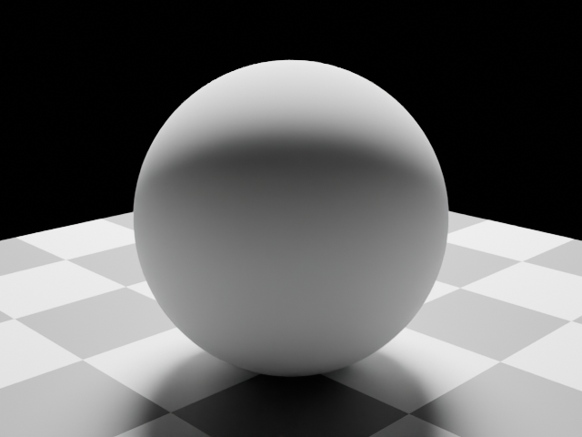
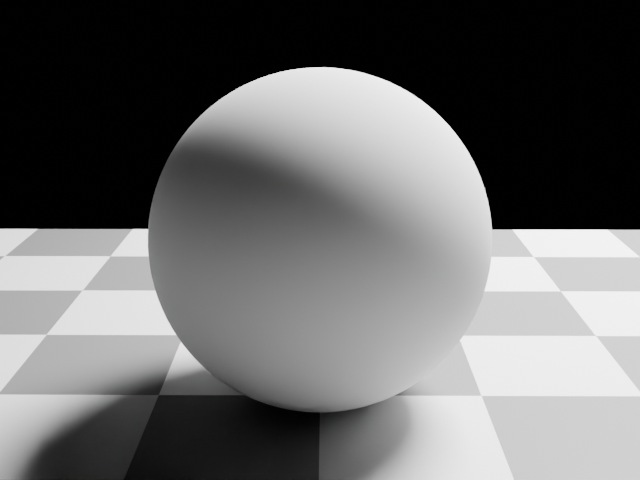
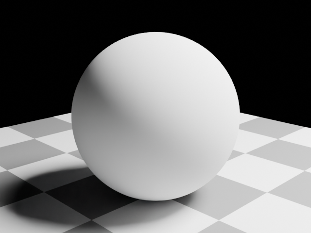
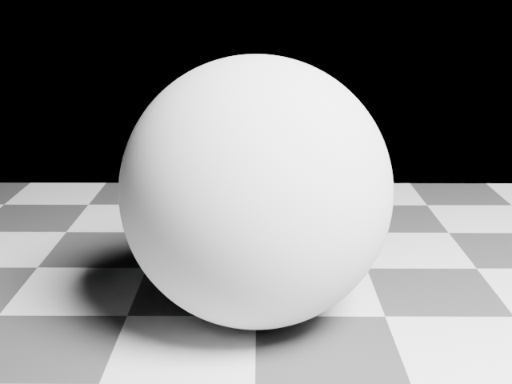
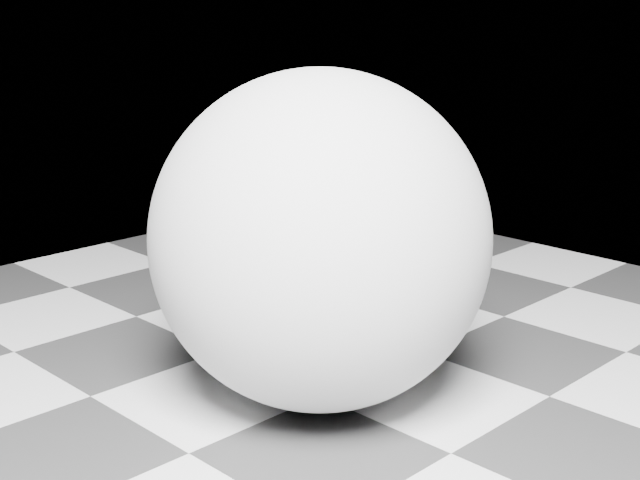

Comparative 3D reconstruction sandbox for the Perspective as Trade paper. This page is the mobile-viewable digest of the latest pipeline run. run #6 2026-05-08
Subdivided UV sphere on a textured plane. Pinch to zoom, drag to rotate.
Eight rendered viewpoints feeding the methods. The point-cloud method trained on seven; the eighth was held out for visual-fidelity scoring.








| Scene | Density | Method | Metric | Value |
|---|---|---|---|---|
| bunny_baseline | sparse | point_cloud | chamfer | 0.5474 |
| bunny_baseline | sparse | point_cloud | psnr | 14.90 dB |
Pred → GT mean: 0.356. GT → pred mean: 0.739.
The cameras orbit at radius 2.5m and only see part of the 4m floor;
GT samples on the unseen edges have no nearby predicted point. The
asymmetry is reading the method's coverage, not its
faithfulness. Three ways to handle: trim the floor in the
scene, mask GT to the visible region via camera frustums, or accept
the asymmetric metric as real signal. Open methodology question —
see docs/open_questions.md.
The full SQLite store is published as a static asset and queryable in-browser via Datasette-Lite — runs cleanly on phone:
Open spiral.db in Datasette-Lite ↗
Or grab the file directly: spiral.db · latest_run.json
Phases 1–6 of the project plan are in. point_cloud runs
end-to-end; the other five methods (photogrammetry, MVS, NeRF, 3DGS,
SDF) are interface stubs awaiting Phase 7. Mobile-viewability is the
hosting constraint — see docs/decisions/0001-hosting-stack.md.